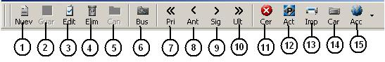

|
Barra de herramientas (ToolBar) estándar.
Esta barra se convierte en el eje principal de todos los
formularios, sob-módulos, donde se ingresa, edita y elimina información.
Es muy sencilla de utilizar, basta con dar clic sobre sus botones para
accionar la operación que deseemos.

1- Nuevo: Boton para crear registros nuevos. Tecla rápida (F9)
2- Guardar: Presionando este botón, el formulario se evalúa y si la información
que hallamos ingresado es correcta y suficiente, graba el registro despues de una edicion o creacion.
Tecla rápida (F11)
3- Editar-modificar: Cuando tenemos la información de un registro almacenada
y deseamos cambiar algún dato, podemos utilizar este botón, cuando la
información este completa presionamos en guardar. Tecla rapida (F10)
4- Eliminar: Borra o elimina un registro almacenado. Tecla rapida (F3)
5- Cancelar: Cancela una edicion o la creacion sin guardar de un registro. Tecla rapida (F4)
6- Buscar: Busca un registro especifico en la base datos. Tecla rapida (inicio)
7- Primero: Va al primer registro. Tecla rapida (F5)
8- Anterior: Va al registro anterior de donde estamos ubicados. Tecla rapida (F6)
9- Siguiente: Va al siguiente registro. Tecla rapida (F7)
10- Ultimo: Va al ultimo registro. Tecla rapida (F8)
11- Cerrar: Cierra la pantalla activa, este boton se deshabilita cuando
estamos creando o editando un registro. Tecla rapida (F12)
12- Actualizar: Refresca la informacion que tenemos en pantalla. No tiene tecla rapida
13- Imprimir: Tecla para imprimir los registros. Tecla rapida (Fin)
14- Cargar: La informacion relacionada como el caso de los nombres de ciudades, rutas etc, se carga
con este boton en cualquiera de los modulos. Tecla rapida (Pausa)
15- Acciones: Boton para las acciones adicionales del formulario. Sin tecla rapida
La funcionalidad y el nombre de cada uno de los botones se pude ver colocando el cursor encima
de cada uno sin precionarlo.
|